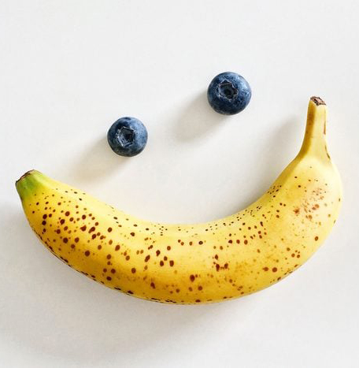

Winston
Profile
Whether tackling challenges or pursuing passions, my spirit and creativity propel me forward,
creating a lasting impression on those fortunate enough to cross
paths with this remarkable individual.
Employment History
Web Designer at Central Fogões, São Paulo - Brazil
Jul 2022 - Jan 2023
- Content creation using Adobe Suite and Canva.
- Managed and generated media contents to all social media pages
and create innovative posts to achieve user satisfaction.
- Planned, developed, tested, deployed, and maintained web pages.
- Created compelling social media texts and messages that supported
the company mission.
- Researched and implemented winning social media strategies to
increase viewership and fans.
Junior Graphic Designer at Crialed, São Paulo - Brazil
Aug 2021 - May 2022
- Content creation for the use in the marketing department.
- Fostered a high rate of returning clients due to optimal customer service and
outstanding graphic design services.
- Utilized Adobe Creative Suite and other applications to create advanced designs
and animations.
- Creation of 3D and 2D models for animation.
- Ensured quality production of models, animations, and projects.
- Creation of effective logos and advertisement layouts for the company.
- Brought forth visual and analytical innovation and problem-solving in 3-dimensional
spaces.
- Effectively animated characters.
Education
Bachelor's degree, Fine/Studio Arts at Universidade Federal de Minas Gerais -
Feb 2017 - Dec 2020
Skills
- Adobe Suite
- Character Animation
- 3D Rendering
- 3D Animation
- 2D Animation
Contact Me
About Me